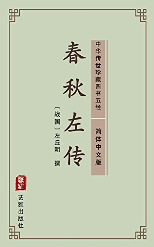

卷十二晋灵公不君（宣公二年）——光明与黑暗的抗争
卷十二晋灵公不君（宣公二年）——光明与黑暗的抗争#

【原文】
晋灵公不君①：厚敛以雕墙(2);从台上弹人，而观其辟丸也；宰夫胹熊蹯不熟③，杀之，置诸畚(4)，使妇人载以过朝⑤。赵盾、士季见其手(6),问其故，而患之。将谏，士季曰：“谏而不入(7)，则莫之继也。会请先，不入，则子继之。”三进，及溜(8)，而后视之，曰：“吾知所过矣，将改之。”稽首而对曰：“人谁无过？过而能改，善莫大焉。《诗》曰：‘靡不有初，鲜克有终(9)。’夫如是，则能补过者鲜矣。君能有终，则社稷之固也，岂惟群臣赖之(10)”。又曰：‘衮职有阙，惟仲山甫补之(11)。，能补过也。君能补过，衮不废矣(12)。”犹不改。宣子骤谏(13)，公患之，使鉏麑贼之(14)。晨往，寝门辟矣(15)，盛服将朝(16)。尚早，坐而假寐(17)。麑退，叹而言曰：“不忘恭敬，民之主也(18)。贼民之主，不忠；弃君之命，不信。有一于此，不如死也！”触槐而死。
秋九月，晋候饮赵盾酒(19),伏甲(20),将攻之。其右提弥明知之(21),趋登(22)，曰：“臣侍君宴，过三爵(23)，非礼也。”遂扶以下。公嗾夫獒焉(24)。明搏而杀之。盾曰：“弃人用大，虽猛何为！”斗且出。提弥明死之(25)。
初，宣子田于首山(26)，舍于翳桑(27)。见灵辄饿(28)，问其病。曰：“不食三日矣！”食之(29)，舍其半。问之。曰：“宦三年矣(30)”，未知母之存否。今近焉，请以遗之(31)。”使尽之，而为之箪食与肉(32)，置诸橐以与之(33)。既而与为公介(34)，倒戟以御公徒，而免之。问何故，对日：“翳桑之饿人也。”间其名居，不告而退。遂自亡也。
乙丑，赵穿攻灵公于桃园(35)。宣子未出山而复。大史书曰(36)：“赵盾弑其君。”以示于朝。宣子曰：“不然。”对曰：“子为正卿，亡不越竟，反不讨贼(37)，非子而谁？”宣子曰：“乌呼(38)!《诗》曰：‘我之怀矣，自诒伊戚(39)。’其我之谓矣。”
孔子曰：“董狐，古之良史也，书法不隐(40)。赵宣子，古之良大夫也，为法受恶(41)。惜也，越竞乃免。”
宣子使赵穿逆公子黑臀于周而立之(42)。壬申，朝于武宫(43)。
【注释】
①晋灵公：晋国国君，名夷皋，文公之孙，襄公之子。不君：不行君道。②厚敛：加重征收赋税。雕墙：装饰墙壁。这里指修筑豪华宫室，过着奢侈的生活。③宰夫：国君的何师。胹（er）：煮，炖。熊蹯（fan）：熊掌。④畚（ben）：筐篓一类盛物的器具。⑤载：同“戴”，用头顶着。(6)赵盾：赵衰之子，晋国正卿。士季：士为之孙，晋国大夫，名会。(7)不入：不采纳，不接受。(8)三进：向前走了三次。及：到。溜：屋檐下滴水的地方“。(9)这两句诗出自《诗•大雅•荡》。靡：没有什么。初：开端。鲜：少。克：能够。终：结束。(10)赖：依靠。(11)这两句诗出自《诗•大雅•杰民》。衮（gun）：天子的礼服，借指天子，这里指周宣王。阙：过失。仲山甫：周宣王的贤臣。(12)衮：指君位。(13)骤：多次。(14)鉏麑（chuni）：晋国力士。贼：刺杀。(15)辟：开着。(16)盛服：穿戴好上朝的礼服。(17)假寐：闭目养神，打盹儿。(18)主：主人，靠山。(19)饮（yin）：给人喝。(20)伏：埋伏。甲：披甲的士兵。(21)右：车右。提弥明：晋国勇士，赵盾的车右。(22)趋登：快步上殿堂。(23)三爵：三巡。爵：古时的酒器。(24)嗾（sou）：唤狗的声音。獒（ao）：猛犬。(25)死之:为之死。之：指赵盾。(26)田：打猎。首山：首阳山，在今山西永济东南。(27)舍，住宿。翳（yi）桑：首山附近的地名。(28)灵辄：人名，晋国人。(29)食（si）之：给他东西吃。(30)宦（huan）：给人当奴仆。(31)遗（wei）：送给。(32)箪（dan）：盛饭的圆筐。食：饭。(33)橐（tuo）：两头有口的口袋，用时以绳扎紧。(34)与：参加，介：甲指甲士。(35)赵穿：晋国大夫，赵盾的堂兄弟。(36)大史：太史，掌纪国家大事的史官。这里指晋国史官董狐。书：写。(37)竟：同“境”。贼:弑君的人，指赵穿。(38)乌呼：感叹词，同“呜呼”，啊。(39)怀：眷恋。诒：同‘贻”，留下。伊，语气词。(40)良史：好史官。书法：记事的原则.隐：隐讳，不直写。(41)恶：指弑君的恶名，(42)逆：迎，公子黑臀：即晋成公，文公之子，襄公之弟，名黑臀，(43)武宫：晋武公的宗庙，在曲沃。
【译文】
晋灵公不遵守做国君的规则，大量征收赋税来满足奢侈的生活。他从高台上用弹弓射行人，观看他们躲避弹丸的样子。厨师没有把熊掌炖烂，他就把厨师杀了，放在筐里，让官女们用头顶着经过朝廷。大臣赵盾和士季看见露出的死人手，便询问厨师被杀的原因，并为晋灵公的无道而忧虑。他们打算规劝晋灵公，士季说：“如果您去进谏而国君不听，那就没有人能接着进谏了。让我先去规劝，他不接受，您就接着去劝。”士季去见晋灵公时往前走了三次，到了屋檐下，晋灵公才抬头看他，并说：“我已经知道自己的过错了，打算改正。”士季叩头回答说：“哪个人能不犯错误呢，犯了错误能够改正，没有比这更大的好事了。《诗•大雅，荡》说：‘事情容易有好开端，但很难有个好结局。’如果这样，那么弥补过失的人就太少了。您如能始终坚持向善，那么国家就有了保障，而不止是臣子们有了依靠。《诗•大雅•烝民》又说：‘天子有了过失，只有仲山甫来弥补。’这是说周宣王能补救过失。国君能够弥补过失，君位就不会失去了。”
可是晋灵公并没有改正。赵盾又多次劝谏，使晋灵公感到讨厌，晋灵公便派鉏麑去刺杀赵盾。鉏麑一大早就去了赵盾的家，只见卧室的门开着，赵盾穿戴好礼服准备上朝，时间还早，他和衣坐着打吨儿。鉏麑退了出来，感叹地说：“这种时候还不忘记恭敬国君，真是百姓的靠山啊。杀害百姓的靠山，这是不忠；背弃国君的命令，这是失信。这两条当中占了一条，还不如去死！”于是，鉏麑一头撞在槐树上死了。
秋天九月，晋灵公请赵盾喝酒，事先埋伏下武士，准备杀掉赵盾。赵盾的车右提弥明发现了这个阴谋，快步走上殿堂，说：“臣下陪君王宴饮，酒过三巡还不告退，就不合礼仪了。”于是他扶起赵盾走下殿堂。晋灵公唤了出猛犬来咬赵盾。提弥明徒手上前搏斗，打死了猛犬。赵盾说：“不用人而用狗，虽然凶猛，又有什么用！”他们两人与埋伏的武士边打边退。结果，提弥明为赵盾战死了。
当初，赵盾到首阳山打猎，住在翳桑。他看见有个叫灵辄的人饿倒了，便去问他的病情。灵辄说：“我已经三天没吃东西了。…赵盾给他东西吃，他留下了一半。赵盾问为什么，灵辄说：“我给别人当奴仆三年了，不知道家中老母是否活着。现在离家近了，请让我把留下的食物送给她。”赵盾让他把食物吃完，另外给他准备了一篮饭和肉，放在口袋里给他。后来灵辄做了晋灵公的武士，他在搏杀中把武器倒过来抵挡晋灵公手下的人，使赵盾得以脱险。赵盾问他为什么这样做，他回答说：“我就是在翳桑的饿汉。”赵盾再问他的姓名和住处，他没有回答就退走了。赵盾自己也逃亡了。
九月二十六日，赵穿在桃园杀掉了晋灵公。赵盾还没有走出国境的山界，听到灵公被杀便回来了。晋国太史董狐记载道：“赵盾杀了他的国君。”他还把这个说法拿到朝廷上公布。赵盾说：“不是这样。”董狐说：“您身为正卿，逃亡而不出国境，回来后又不讨伐叛贼，不是您杀了国君又是谁呢？”赵盾说：“啊！《诗》中说：‘我心里怀念祖国，反而给自己留下忧伤。’这话大概说的是我吧。”
孔子说：“董狐是古代的好史官，记事的原则是直书而不隐讳。赵盾是古代的好大夫，因为史官的记事原则而蒙受了弑君的恶名。可惜啊，如果他出了国境，就会避免弑君之名了。”
赵盾派赵穿到成周去迎接晋国公子黑臀，把他立为国君。十月初三，公子黑臀去朝拜了武公庙。
【读解】
不知道是否有心理学家专门研究过历史上的暴君的心理，这种研究肯定很有意思。在平常人看来，暴君们的言行举止都有些异乎寻常，按正常人来说是匪夷所思的。比如，夏桀的宠姬妹喜爱听裂帛声，建造过“酒池肉林”；商纣王的酷刑“金瓜击顶”、“炮烙”、“虿盆”、做人的肉羹。活剖孕妇等等。
晋灵公弹射路人、杀厨子游尸的举动，仅仅用一般的残暴、狠是难以说明的，恐怕总有些变态心理，或者歇斯底里症一类的精神病，才能解释他的怪癖行径。如果真是这样，除了治病、关进疯人院之外，没有任何办法让他改邪归正，或者像赵穿那样，将其杀掉，以免危害更多的人。
中国传统政治制度致命的痼疾就在于，无论所滑的“天子”多么愚笨、痴呆，无论多么残暴、缺德，无论多么变态。病入膏育，都是“神圣”的，不可冒犯的，不可弹劾讨伐的，否则，便会犯下各种“罪行”：欺君，亵读，犯上作乱，直至弑君。而且，这些罪行都是弥天大罪，不可赦免，甚至可以诛灭九族。
至今想起这些，依然让人不寒而粟、切齿痛恨！天子也不过是吃人饭拉人屎的家伙，说不定智商还很低，凭什么就可以骑在千万人的头顶上拉屎撒尿，作威作福？他们凭什么就能比百姓聪明能干。具备当“领袖”的才能，如果说这世上真有什么天才的话，多半也没有那些享尽人间荣华富贵。骄横得不可一世的“天子”们的份儿。
虽然有此痼疾，但让人感叹不已的是，无论在那个时代，只要有昏情残暴的暴政。苛政存在，就有敢于诤言直谏的义士出现，并有敢于弑君的勇士出现，前者如赵盾，后者如赵穿。他们明知自己的行为将要以自己的生命作为代价，甚至还包括以自己亲人的生命为代价，依然大义凛然，慷慨陈词，视死如归。
这些词语，只有用在这些义士、勇士身上才是沉甸甸的、掷地有声的、名实相符的。
其实，敢于直谏、敢于弑暴君，已远不止是一种一时冲动的个人行为，更不是宗教信徒的迷狂。它是一种非常清醒的、理智的选择，是不得不如此的抉择。有时，明知暴君不可理喻，有时明知自己的行动无异于以卵击石，自投罗网，如荆柯刺秦临行前所唱：“风萧萧兮易水寒，壮士一去兮不复还”，但是，它们所体现的是一种精神，是一种具有普遍意义的永恒的正义，即决不向残暴专制、黑暗腐朽屈膝让步的决心。
正如希腊神话传说中的西西弗斯明知自己推上山的巨石要滚下来一样，依然坚持不懈地推下去。人类的精神和行动的意义，就在过程之中显示了出来，结果则是次要的了，甚至并不重要了。
面对残暴和死亡而敢于挺身而出，这种行为表示了一种严正的抗议，表示了一种不屈的精神。翻看历史，这种抗议和精神从来就没有中断过，就好比光明和黑暗从来都是相随相伴，哪一方都没有消失过一样。也许，光明和黑暗永远都会这么抗衡下去，直到人类不再存在。